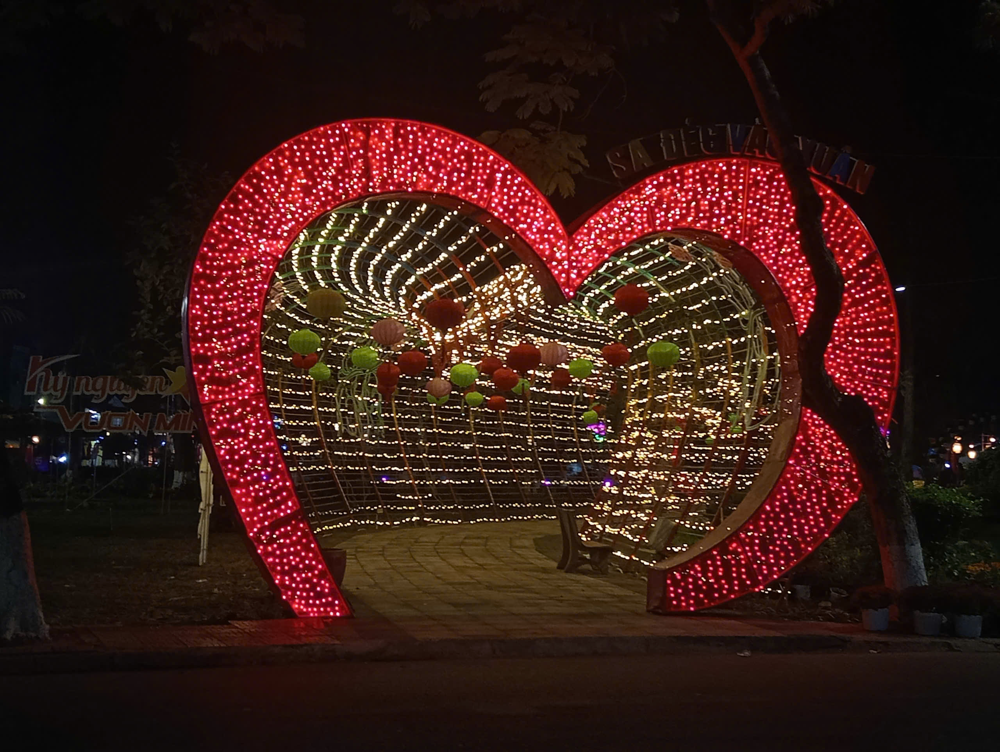
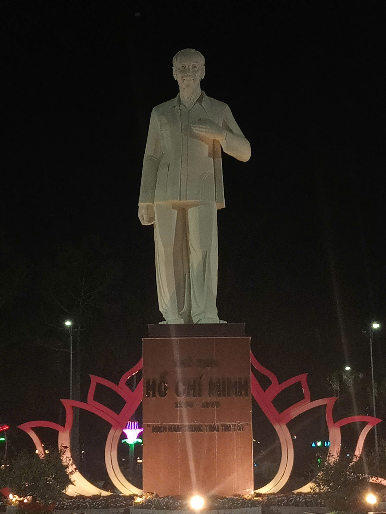
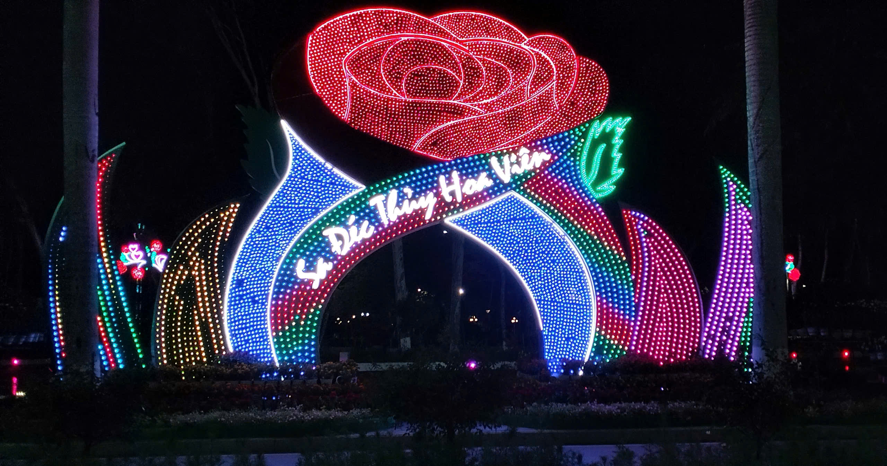
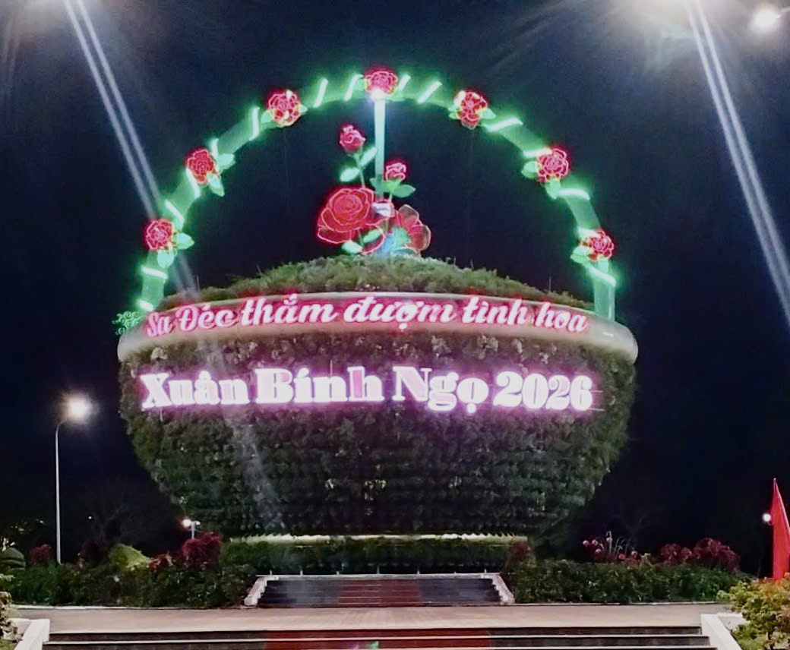

Thời gian và Địa điểm
- Thời gian: Từ ngày 27/12/2025 - 04/01/2026.
- Địa điểm: Công viên Sa Đéc (đường Tôn Đức Thắng, khóm Tân Bình, phường Sa Đéc, tỉnh Đồng Tháp).




Nguồn gốc
- Hình thành làng nghề: Nghề trồng hoa ở Sa Đéc bắt đầu từ cuối thế kỷ 19, khi một số hộ dân ở Tân Quy Đông trồng hoa phục vụ Tết, với đất đai màu mỡ từ sông Tiền và khí hậu thuận lợi, nghề phát triển mạnh mẽ từ thế kỷ 20. Nghệ nhân Tư Tôn: Ông là người có công lớn đưa giống hoa hồng từ Pháp về thuần hóa, xây dựng Vườn hồng Tư Tôn, tạo nên nền tảng vững chắc và bản sắc văn hóa cho làng hoa Sa Đéc.
Mục đích
- Tôn vinh di sản: Nhằm tôn vinh và bảo tồn nghề trồng hoa kiểng, được công nhận là Di sản văn hóa phi vật thể quốc gia, nâng cao giá trị sinh kế cho người dân, Báo Mới.
Người tổ chức
- Ban Tổ chức (UBND tỉnh Đồng Tháp & các sở ban ngành).
- UBND thành phố Sa Đéc và các đơn vị trực thuộc.